Text as Data: Unsupervised machine learning continued
Dr. Ayse D. Lokmanoglu Lecture 10, (B) April 6, (A) April 1
R Exercises
Table of Contents
| Section | Topic |
|---|---|
| 1 | Loading L9 Results and Creating Meta-Theta DataFrame |
| 1.1 | Load Workspace from L9 |
| 1.2 | Extract Gamma Matrix |
| 1.3 | Create Meta-Theta DataFrame |
| 1.4 | Verify Data Structure |
| 2 | Sentiment Analysis |
| 2.1 | Tokenize the Text |
| 2.2 | AFINN Sentiment Dictionary |
| 2.3 | Bing Sentiment Dictionary |
| 2.4 | NRC Emotion Lexicon |
| 2.5 | Comparing All Three Dictionaries |
| 2.5.1 | Coverage Comparison |
| 2.5.2 | Sentiment Distribution Comparison |
| 2.5.3 | Correlation Between Dictionaries |
| 2.5.4 | Which Dictionary Should We Use? |
| 3 | Sentiment by Topic Analysis |
| 3.1 | Create Sentiment-Topic Dataset |
| 3.2 | Aggregate Sentiment by Topic |
| 3.3 | Visualize Topic Sentiment |
| 3.4 | Statistical Significance |
| 3.5 | Class Exercise: Changing the Reference Category |
| 3.6 | Sentiment Over Time |
| 3.6.1 | Prepare Temporal Data |
| 3.6.2 | Overall Sentiment Trend |
| 3.6.3 | Sentiment by Topic Over Time |
| 3.6.4 | Topic Prevalence Over Time |
| 4 | Comprehensive Class Exercise |
ALWAYS Let’s load our libraries
library(tidyverse) # Data manipulation and visualization
library(tidytext) # Text mining using tidy data principles
library(ggplot2) # Data visualization
library(topicmodels) # For working with LDA models
library(lubridate) # Date handling1. Loading L9 Results and Creating Meta-Theta DataFrame
In Lecture 9, we trained an LDA model with K=5 topics on K-pop Reddit comments. Now we’ll extract the topic probabilities (gamma values) and combine them with the original comment data for sentiment analysis and regression modeling.
1.1 Load Workspace from L9
# Load the saved workspace from Lecture 9
# load("../data/Lecture9_LDA_k5.RData")
# Load from url
load(url("https://github.com/aysedeniz09/IntroCSS/raw/refs/heads/main/data/Lecture9_LDA_k5.RData"))
rm(end_time, start_time)
# Check what objects we have
ls()## [1] "data" "data2" "data3" "lda_model_k5" "mystopwords"
## [6] "tidy_dfm"We should see:
lda_model_k5: The trained LDA modeldata: Original comment datadata2: Clean comment datadata3: Final cleaned data we will usetidy_dfm: The document-term matrixmystopwords: Stopwords we used in cleaning
1.2 Extract Gamma Matrix
The gamma matrix contains the probability that each document belongs to each topic. For our data:
Rows = comments (22,408 comments)
Columns = topics (5 topics)
Values = probabilities (sum to 1.0 per row)
# Extract gamma values using tidy()
gamma_df <- tidy(lda_model_k5, matrix = "gamma")
# Look at the structure
head(gamma_df)## # A tibble: 6 × 3
## document topic gamma
## <chr> <int> <dbl>
## 1 1 1 0.142
## 2 2 1 0.141
## 3 3 1 0.159
## 4 4 1 0.218
## 5 5 1 0.135
## 6 6 1 0.259Understanding the output:
document: The comment_index (as character)topic: Which topic (1-5)gamma: Probability this document belongs to this topic
Let’s look at one comment’s topic distribution:
# Example: Topic probabilities for comment 1
gamma_df |>
filter(document == "1") |>
arrange(desc(gamma))## # A tibble: 5 × 3
## document topic gamma
## <chr> <int> <dbl>
## 1 1 2 0.245
## 2 1 4 0.245
## 3 1 5 0.198
## 4 1 3 0.170
## 5 1 1 0.142# Verify probabilities sum to 1
gamma_df |>
filter(document == "1") |>
summarise(total_gamma = sum(gamma))## # A tibble: 1 × 1
## total_gamma
## <dbl>
## 1 11.3 Create Meta-Theta DataFrame
Now we’ll reshape gamma from long to wide format and join with original data:
# Convert document to numeric to match comment_index
gamma_df <- gamma_df |>
mutate(comment_index = as.numeric(document))
# Pivot to wide format: one column per topic
gamma_wide <- gamma_df |>
select(-document) |>
pivot_wider(names_from = topic,
values_from = gamma,
names_prefix = "topic_")
head(gamma_wide)## # A tibble: 6 × 6
## comment_index topic_1 topic_2 topic_3 topic_4 topic_5
## <dbl> <dbl> <dbl> <dbl> <dbl> <dbl>
## 1 1 0.142 0.245 0.170 0.245 0.198
## 2 2 0.141 0.141 0.437 0.141 0.141
## 3 3 0.159 0.159 0.391 0.145 0.145
## 4 4 0.218 0.218 0.2 0.182 0.182
## 5 5 0.135 0.135 0.405 0.176 0.149
## 6 6 0.259 0.185 0.185 0.185 0.185Now join with original comment data:
# Create meta_theta_df: original data + topic probabilities
meta_theta_df <- data3 |>
select(comment_index, text, date, score, text_length, controversiality, downs) |>
inner_join(gamma_wide, by = "comment_index") # inner_join ensures we only keep documents in the model
# View structure
glimpse(meta_theta_df)## Rows: 22,316
## Columns: 12
## $ comment_index <dbl> 1, 2, 3, 4, 5, 6, 7, 8, 9, 10, 11, 12, 13, 14, 15, 16…
## $ text <chr> "kind of a tangent but kind of a telling tidbit from …
## $ date <date> 2025-07-01, 2025-07-01, 2025-07-01, 2025-07-01, 2025…
## $ score <dbl> 71, 1, 1, 9, 1, 10, 5, 1, 2, 30, 1, 2, 6, 1, 2, 5, 5,…
## $ text_length <dbl> 818, 561, 519, 66, 469, 117, 53, 163, 2917, 98, 53, 2…
## $ controversiality <dbl> 0, 0, 0, 0, 0, 0, 0, 0, 0, 0, 0, 0, 0, 0, 0, 0, 0, 0,…
## $ downs <dbl> 0, 0, 0, 0, 0, 0, 0, 0, 0, 0, 0, 0, 0, 0, 0, 0, 0, 0,…
## $ topic_1 <dbl> 0.1415094, 0.1408451, 0.1594203, 0.2181818, 0.1351351…
## $ topic_2 <dbl> 0.24528302, 0.14084507, 0.15942029, 0.21818182, 0.135…
## $ topic_3 <dbl> 0.1698113, 0.4366197, 0.3913043, 0.2000000, 0.4054054…
## $ topic_4 <dbl> 0.2452830, 0.1408451, 0.1449275, 0.1818182, 0.1756757…
## $ topic_5 <dbl> 0.1981132, 0.1408451, 0.1449275, 0.1818182, 0.1486486…1.4 Verify Data Structure
Let’s verify everything looks correct:
# Check: do we have all our comments?
nrow(data3)## [1] 22408nrow(meta_theta_df)## [1] 22316# Check: do gamma values sum to 1 for each comment?
meta_theta_df |>
mutate(gamma_sum = topic_1 + topic_2 + topic_3 + topic_4 + topic_5) |>
pull(gamma_sum) |>
summary()## Min. 1st Qu. Median Mean 3rd Qu. Max.
## 1 1 1 1 1 1# Should all be 1.000 (or very close due to rounding)
# Check: what are the distributions of topic probabilities?
meta_theta_df |>
select(starts_with("topic_")) |>
summary()## topic_1 topic_2 topic_3 topic_4
## Min. :0.02669 Min. :0.02876 Min. :0.04471 Min. :0.04605
## 1st Qu.:0.17857 1st Qu.:0.18519 1st Qu.:0.17391 1st Qu.:0.18182
## Median :0.19643 Median :0.20000 Median :0.18519 Median :0.19643
## Mean :0.20258 Mean :0.20176 Mean :0.19475 Mean :0.20080
## 3rd Qu.:0.22414 3rd Qu.:0.21818 3rd Qu.:0.20000 3rd Qu.:0.21569
## Max. :0.76823 Max. :0.44860 Max. :0.73203 Max. :0.56738
## topic_5
## Min. :0.03906
## 1st Qu.:0.17544
## Median :0.18868
## Mean :0.20011
## 3rd Qu.:0.20755
## Max. :0.83221What the Summary Statistics Tell Us:
Means ≈ 0.20: Confirms topics are roughly balanced across the corpus
Medians ≈ 0.19-0.20: Most comments have near-equal topic distribution
Max values vary:
Topic 5 (HYBE): 0.832 - some comments are 83% about the controversy!
Topic 2 (Discussions): 0.449 - lower ceiling, more general discussions
Topic 1 (Music): 0.768 - strong music-focused comments exist
Let’s visualize the topic distributions:
What to look for:
Most comments have low gamma for most topics (left-skewed)
Some comments have high gamma for one topic (right tail)
# Reshape for visualization
topic_dist <- meta_theta_df |>
select(comment_index, starts_with("topic_")) |>
pivot_longer(cols = starts_with("topic_"),
names_to = "topic",
values_to = "gamma",
names_prefix = "topic_") |>
mutate(topic = factor(topic, levels = 1:5,
labels = c("Topic 1: Music",
"Topic 2: Discussions",
"Topic 3: Rules",
"Topic 4: Groups",
"Topic 5: HYBE")))
# Distribution of gamma values by topic
ggplot(topic_dist, aes(x = gamma, fill = topic)) +
geom_histogram(bins = 50, alpha = 0.7) +
facet_wrap(~topic, ncol = 1) +
labs(title = "Distribution of Topic Probabilities",
subtitle = "How strongly do comments belong to each topic?",
x = "Gamma (Topic Probability)",
y = "Number of Comments") +
theme_minimal() +
theme(legend.position = "none")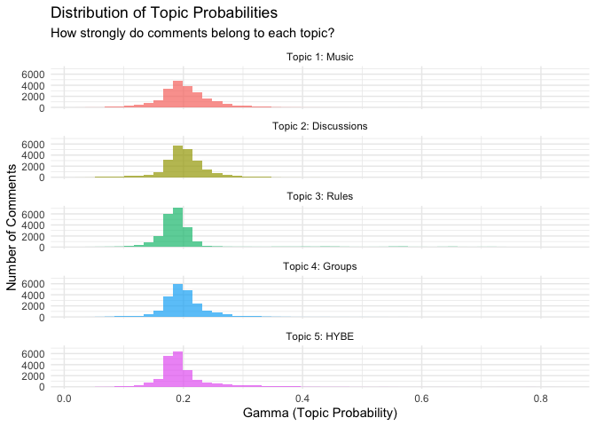
Interpreting the Visualization:
The histograms show how topic probabilities (gamma values) are distributed across all 22,316 comments. Each panel represents one topic, and the x-axis shows the probability that a comment belongs to that topic.
Key Observations:
Most comments are mixed-topic (gamma ≈ 0.20)
The peak around 0.20 for all topics makes sense: 1/5 = 0.20
This means most comments don’t strongly belong to any single topic
Instead, they contain a mixture of themes
Right-skewed distributions
All topics show a right tail extending toward higher gamma values
This represents comments that ARE strongly about one specific topic
For example, Topic 5 (HYBE controversy) has comments with gamma up to 0.83
Topic-specific patterns
Topic 1 (Music): Wider spread, some very music-focused comments
Topic 3 (Rules): Tighter distribution, template moderation messages likely
Topic 5 (HYBE): Longest right tail, indicating polarizing controversy content
Why This Matters for Sentiment Analysis:
Understanding these distributions is crucial before we add sentiment scores because:
We can analyze sentiment within topics (e.g., “Is HYBE controversy more negative than music appreciation?”)
We can identify “pure” topic comments (high gamma) vs. “mixed” comments (low gamma)
We can see if sentiment varies by how strongly a comment belongs to a topic
2. Sentiment Analysis
In this section, we’ll analyze the sentiment of K-pop Reddit comments and compare different sentiment dictionaries to see which works best for our data.
2.1 Tokenize the Text
First, we need to break the text into individual words (tokens) and remove stopwords:
# Tokenize comments - keep topic probabilities for later analysis
tokens <- meta_theta_df |>
select(comment_index, text, score, starts_with("topic_")) |>
unnest_tokens(word, text) |>
anti_join(stop_words, by = "word")
# Check structure
head(tokens, 20)## # A tibble: 20 × 8
## comment_index score topic_1 topic_2 topic_3 topic_4 topic_5 word
## <dbl> <dbl> <dbl> <dbl> <dbl> <dbl> <dbl> <chr>
## 1 1 71 0.142 0.245 0.170 0.245 0.198 tangent
## 2 1 71 0.142 0.245 0.170 0.245 0.198 telling
## 3 1 71 0.142 0.245 0.170 0.245 0.198 tidbit
## 4 1 71 0.142 0.245 0.170 0.245 0.198 japan
## 5 1 71 0.142 0.245 0.170 0.245 0.198 universal
## 6 1 71 0.142 0.245 0.170 0.245 0.198 studio
## 7 1 71 0.142 0.245 0.170 0.245 0.198 japan
## 8 1 71 0.142 0.245 0.170 0.245 0.198 hybe
## 9 1 71 0.142 0.245 0.170 0.245 0.198 usj
## 10 1 71 0.142 0.245 0.170 0.245 0.198 summer
## 11 1 71 0.142 0.245 0.170 0.245 0.198 dance
## 12 1 71 0.142 0.245 0.170 0.245 0.198 night
## 13 1 71 0.142 0.245 0.170 0.245 0.198 july
## 14 1 71 0.142 0.245 0.170 0.245 0.198 aug
## 15 1 71 0.142 0.245 0.170 0.245 0.198 play
## 16 1 71 0.142 0.245 0.170 0.245 0.198 hybe
## 17 1 71 0.142 0.245 0.170 0.245 0.198 artists
## 18 1 71 0.142 0.245 0.170 0.245 0.198 music
## 19 1 71 0.142 0.245 0.170 0.245 0.198 ppl
## 20 1 71 0.142 0.245 0.170 0.245 0.198 dance# How many words do we have?
nrow(tokens) ##total toekns## [1] 405126n_distinct(tokens$word)## unique tokens## [1] 29730round(nrow(tokens) / n_distinct(tokens$comment_index), 1) ## avreage words/comment## [1] 18.2What we’re doing:
unnest_tokens(word, text): Splits each comment into individual wordsConverts to lowercase automatically
Removes punctuation
Creates one row per word
anti_join(stop_words): Removes common words like “the”, “and”, “is”Stopwords don’t carry sentiment
Focusing on content words improves sentiment accuracy
Keeping topic probabilities: We maintain the topic_1 through topic_5 columns so we can later analyze sentiment by topic
What this tells us:
405,126 total words: After removing stopwords, we have ~18 meaningful words per comment
29,730 unique words: Very diverse vocabulary - K-pop fans use rich, varied language
18.2 words per comment: Typical for Reddit comments - not too short (spam) or too long (essays)
This vocabulary size is excellent for sentiment analysis - plenty of words to match against sentiment dictionaries
2.2 AFINN Sentiment Dictionary
Reminder from Lecture 7:
AFINN is a lexicon of English words rated for valence on a scale from -5 (very negative) to +5 (very positive).
✅ Numeric scale: Captures intensity (e.g., “good” = +3, “excellent” = +4)
✅ Great for regression: Numeric outcome works well in statistical models
❌ Smaller vocabulary: ~2,477 words
Let’s apply AFINN to our K-pop comments and see how it performs:
# Apply AFINN sentiment dictionary
afinn_sentiment <- tokens |>
inner_join(get_sentiments("afinn"), by = "word") |>
group_by(comment_index) |>
summarise(
sentiment_afinn = sum(value), # Total sentiment score
n_sentiment_words = n(), # How many sentiment words found
avg_sentiment = mean(value) # Average sentiment per word
) |>
ungroup()
# Check results
head(afinn_sentiment, 10)## # A tibble: 10 × 4
## comment_index sentiment_afinn n_sentiment_words avg_sentiment
## <dbl> <dbl> <int> <dbl>
## 1 1 1 4 0.25
## 2 2 1 1 1
## 3 3 2 1 2
## 4 6 2 1 2
## 5 8 1 1 1
## 6 9 2 4 0.5
## 7 11 -1 1 -1
## 8 12 -2 3 -0.667
## 9 15 -2 1 -2
## 10 16 2 1 2# Summary statistics
summary(afinn_sentiment$sentiment_afinn)## Min. 1st Qu. Median Mean 3rd Qu. Max.
## -80.000 -2.000 1.000 1.028 3.000 126.000summary(afinn_sentiment$n_sentiment_words)## Min. 1st Qu. Median Mean 3rd Qu. Max.
## 1.000 1.000 2.000 2.995 3.000 88.000summary(afinn_sentiment$avg_sentiment)## Min. 1st Qu. Median Mean 3rd Qu. Max.
## -5.0000 -1.0000 0.6667 0.5019 2.0000 5.0000Understanding the Output:
sentiment_afinn: Sum of all sentiment word scores in the comment- Positive = overall positive comment, Negative = overall negative comment
n_sentiment_words: How many AFINN words were found- More words = more confident score
avg_sentiment: Average sentiment per word- Better for comparing short vs. long comments
Interpreting the Results:
Overall Sentiment (sentiment_afinn):
Median = 1.0, Mean = 1.028: K-pop comments are slightly positive overall
Range: -80 to +126: Some extremely positive/negative comments exist
IQR: -2 to +3: Most comments fall in a narrow range around neutral
# sentiment_afinn (sum of scores)
Min. 1st Qu. Median Mean 3rd Qu. Max.
-80.000 -2.000 1.000 1.028 3.000 126.000 Sentiment Word Count (n_sentiment_words):
Median = 2, Mean = 3: Most comments contain only 1-3 sentiment words
Max = 88: Some very long, emotionally-charged comments exist
This low count suggests many comments are factual/informational rather than opinion-based
# n_sentiment_words (count of words)
Min. 1st Qu. Median Mean 3rd Qu. Max.
1.000 1.000 2.000 2.995 3.000 88.000 Average Sentiment (avg_sentiment):
Median = 0.67, Mean = 0.50: Slight positive bias per sentiment word
Full range: -5 to +5: Some comments use only extreme words
Better metric than sum for comparing short vs. long comments
# avg_sentiment (average per word)
Min. 1st Qu. Median Mean 3rd Qu. Max.
-5.0000 -1.0000 0.6667 0.5019 2.0000 5.0000Visualize the distribution:
# Distribution of AFINN scores
ggplot(afinn_sentiment, aes(x = sentiment_afinn)) +
geom_histogram(bins = 50, fill = "steelblue", alpha = 0.7) +
geom_vline(xintercept = 0, linetype = "dashed", color = "red", size = 1) +
labs(
title = "Distribution of AFINN Sentiment Scores",
subtitle = paste0("K-pop Reddit comments (n = ", nrow(afinn_sentiment), ")"),
x = "AFINN Sentiment Score",
y = "Number of Comments"
) +
theme_minimal()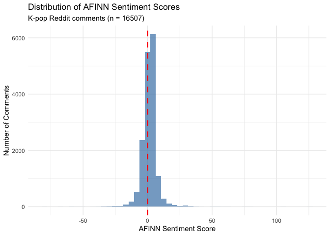
What does this tell us about K-pop Reddit?
Looking at the distribution:
Strong concentration near zero: The histogram shows a tall, narrow peak centered just above 0 (the red dashed line), indicating most comments are neutral to slightly positive
Right-skewed: The distribution has a longer tail toward positive values, confirming K-pop Reddit is more positive than negative overall
Few extreme negatives: The left tail is very short with almost no comments below -20, suggesting the community rarely expresses intense negativity
Positive outliers exist: Some comments reach scores of +50 to +120, likely expressing extreme enthusiasm about artists, music, or performances
Most comments fall in [-5, +15] range: The bulk of the distribution is concentrated in this narrow window, suggesting moderate emotional expression in most comments
Coverage: How many comments were scored?
# Calculate coverage
afinn_coverage <- nrow(afinn_sentiment)
print(afinn_coverage)## [1] 16507coverage_pct <- round(afinn_coverage / nrow(meta_theta_df) * 100, 1)
print(coverage_pct)## [1] 74What does coverage tell us?
74% coverage is good for social media data—AFINN captured sentiment in about 3 out of 4 comments
The 5,809 unscored comments (26%) are likely:
Factual/informational posts (comeback announcements, chart positions, tour dates)
Very short comments (single words, acronyms)
K-pop-specific slang not in AFINN (“bias”, “stan”, “ult”, “comeback”, “bop”)
Links, usernames, or technical discussions
This is typical for domain-specific communities like K-pop fandom subreddits.
Example: Top positive and negative comments
# Join AFINN scores back to original text
afinn_with_text <- afinn_sentiment |>
inner_join(meta_theta_df |> select(comment_index, text, score),
by = "comment_index")
# Most positive comments
afinn_with_text |>
arrange(desc(sentiment_afinn)) |>
select(sentiment_afinn, n_sentiment_words, text) |>
head(3) |>
print()## # A tibble: 3 × 3
## sentiment_afinn n_sentiment_words text
## <dbl> <int> <chr>
## 1 126 67 "**four**: fire instrumental for an intro s…
## 2 104 58 "3 tracks in WHAT IS OPTIONS?? Sorry for ov…
## 3 81 45 "**FOUR** - Holy, this is probably the best…afinn_with_text |>
arrange(sentiment_afinn) |>
select(sentiment_afinn, n_sentiment_words, text) |>
head(3) |>
print()## # A tibble: 3 × 3
## sentiment_afinn n_sentiment_words text
## <dbl> <int> <chr>
## 1 -80 20 "WHAT THE FUCK. WHAT THE FUCK.\nWHAT THE FU…
## 2 -66 49 "(thanks mods for approving!)\n\nI've been …
## 3 -61 41 "This is by Financial News.\n\nMmm not sure…2.3 Bing Sentiment Dictionary
Reminder from Lecture 7:
Bing is a binary sentiment lexicon that classifies words as either positive or negative.
✅ Larger vocabulary: ~6,786 words (more coverage than AFINN)
✅ Simple interpretation: Just positive vs. negative
❌ No intensity: “good” and “excellent” both = positive (no difference)
❌ Binary only: Can’t use in regression models (need numeric scores)
Let’s apply Bing and compare to AFINN:
# Apply Bing sentiment dictionary
bing_sentiment <- tokens |>
inner_join(get_sentiments("bing"), by = "word") |>
group_by(comment_index) |>
summarise(
n_positive = sum(sentiment == "positive"), # Count positive words
n_negative = sum(sentiment == "negative"), # Count negative words
n_sentiment_words = n(), # Total sentiment words
sentiment_bing = n_positive - n_negative # Net sentiment score
) |>
ungroup()
# Check results
head(bing_sentiment, 10)## # A tibble: 10 × 5
## comment_index n_positive n_negative n_sentiment_words sentiment_bing
## <dbl> <int> <int> <int> <int>
## 1 1 2 3 5 -1
## 2 3 1 0 1 1
## 3 5 1 0 1 1
## 4 8 2 0 2 2
## 5 9 3 2 5 1
## 6 11 1 1 2 0
## 7 12 2 3 5 -1
## 8 14 1 1 2 0
## 9 15 1 1 2 0
## 10 17 4 0 4 4# Summary statistics
summary(bing_sentiment$sentiment_bing)## Min. 1st Qu. Median Mean 3rd Qu. Max.
## -41.0000 -1.0000 0.0000 -0.0753 1.0000 56.0000summary(bing_sentiment$n_sentiment_words)## Min. 1st Qu. Median Mean 3rd Qu. Max.
## 1.00 1.00 2.00 3.14 4.00 81.00Interpreting the Results:
Net Sentiment (sentiment_bing):
Median = 0, Mean = -0.075: Comments are essentially neutral with a tiny negative lean
Range: -41 to +56: Similar range to AFINN, some very strong opinions exist
IQR: -1 to +1: Most comments fall in a very narrow range (1 more positive or negative word)
# sentiment_bing (net score: positive - negative)
Min. 1st Qu. Median Mean 3rd Qu. Max.
-41.0000 -1.0000 0.0000 -0.0753 1.0000 56.0000 Sentiment Word Count (n_sentiment_words):
Median = 2, Mean = 3.14: Bing found slightly more sentiment words than AFINN (mean 3.14 vs. 2.995)
Max = 81: Similar to AFINN (88), capturing long emotional comments
Bing’s larger vocabulary helps detect more sentiment words
# n_sentiment_words (count of words)
Min. 1st Qu. Median Mean 3rd Qu. Max.
1.00 1.00 2.00 3.14 4.00 81.00Visualize the distribution:
# Distribution of Bing net sentiment scores
ggplot(bing_sentiment, aes(x = sentiment_bing)) +
geom_histogram(binwidth = 1, fill = "coral", alpha = 0.7) +
geom_vline(xintercept = 0, linetype = "dashed", color = "red", size = 1) +
labs(
title = "Distribution of Bing Net Sentiment Scores",
subtitle = "K-pop Reddit comments (positive words - negative words)",
x = "Bing Net Sentiment Score",
y = "Number of Comments"
) +
theme_minimal()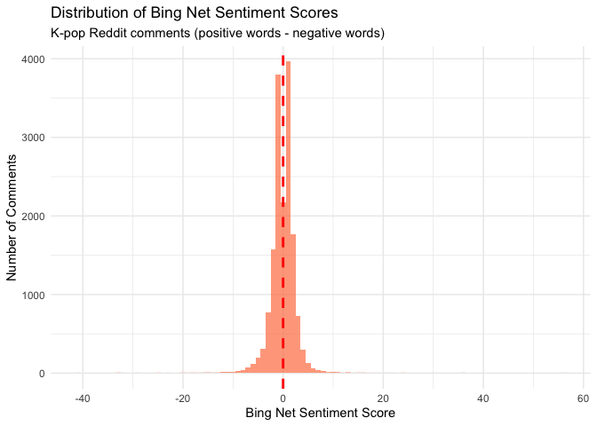
What does the Bing distribution tell us?
Looking at the histogram:
Even stronger concentration at zero: The peak is centered almost exactly on 0 (red line), much more so than AFINN
More symmetric distribution: Unlike AFINN’s right skew, Bing shows a more balanced distribution with similar tails on both sides
Narrow range for most comments: The bulk falls within [-5, +5], suggesting most comments have roughly equal positive and negative words
Similar tail lengths: Both positive and negative extremes exist (up to ±40-60), but neither dominates
Comparing the visualizations (AFINN vs. Bing):
| Feature | AFINN | Bing |
|---|---|---|
| Center | Slightly above 0 (positive) | Exactly at 0 (neutral) |
| Shape | Right-skewed | Symmetric/normal |
| Interpretation | Community leans positive | Community is balanced |
Why the difference?
AFINN captures that K-pop fans use intense positive words (“love” = +3, “amazing” = +4)
Bing just counts words as positive/negative equally, missing this intensity
A comment with “I love this amazing performance!” scores:
AFINN: +3 + 4 = +7 (captures enthusiasm)
Bing: 1 + 1 = +2 (just counts two positive words)
Takeaway: Bing suggests K-pop Reddit is neutral, while AFINN suggests it’s slightly positive. AFINN is likely more accurate because it captures the intensity of fan language.
Coverage: How does Bing compare to AFINN?
# Calculate Bing coverage
bing_coverage <- nrow(bing_sentiment)
print(bing_coverage)## [1] 16242bing_coverage_pct <- round(bing_coverage / nrow(meta_theta_df) * 100, 1)
print(bing_coverage_pct)## [1] 72.8Wait, Bing scored FEWER comments?
This is surprising! Bing has a much larger vocabulary (~6,786 words vs. ~2,477), so we’d expect higher coverage. Why did AFINN score 265 more comments?
Note: We’ll compare all three dictionaries in Section 2.5 to see which works best for our K-pop data.
Example: Positive vs. Negative comments
# Join Bing scores back to original text
bing_with_text <- bing_sentiment |>
inner_join(meta_theta_df |> select(comment_index, text, score),
by = "comment_index")
# Most positive comments (highest net positive)
bing_with_text |>
arrange(desc(sentiment_bing)) |>
select(n_positive, n_negative, sentiment_bing, text) |>
head(3) |>
print()## # A tibble: 3 × 4
## n_positive n_negative sentiment_bing text
## <int> <int> <int> <chr>
## 1 68 12 56 "**four**: fire instrumental for an intr…
## 2 43 7 36 "Hello everyone!! Congratulations on the…
## 3 56 20 36 "3 tracks in WHAT IS OPTIONS?? Sorry for…bing_with_text |>
arrange(sentiment_bing) |>
select(n_positive, n_negative, sentiment_bing, text) |>
head(3) |>
print()## # A tibble: 3 × 4
## n_positive n_negative sentiment_bing text
## <int> <int> <int> <chr>
## 1 7 48 -41 "(Sharing something especially now that …
## 2 10 43 -33 "Okay this one is from TVDaily. I know s…
## 3 11 44 -33 "This is by Financial News.\n\nMmm not s…2.4 NRC Emotion Lexicon
Reminder from Lecture 7:
NRC (National Research Council Canada) is an emotion lexicon that classifies words into multiple categories:
8 basic emotions: anger, fear, anticipation, trust, surprise, sadness, joy, disgust
2 sentiments: positive, negative
A single word can belong to multiple categories (e.g., “love” = positive, joy, trust)
Why use NRC?
✅ Rich emotional profiling: Goes beyond positive/negative to specific emotions
✅ Large vocabulary: ~14,000 words (best coverage)
✅ Multi-dimensional: Captures emotional complexity
❌ No intensity: Like Bing, doesn’t distinguish strong vs. weak emotions
❌ Harder to interpret: 10 categories instead of 1-2
Let’s apply NRC and explore the emotional landscape of K-pop comments:
Understanding the Output:
Each column represents the count of words in that emotion category:
positive,negative: Overall sentiment (like Bing)joy,trust,anticipation: Positive emotionsanger,fear,sadness,disgust: Negative emotionssurprise: Can be positive or negative
# Apply NRC emotion lexicon
nrc_emotions <- tokens |>
inner_join(get_sentiments("nrc"), by = "word")
# Count emotions per comment
nrc_by_comment <- nrc_emotions |>
group_by(comment_index, sentiment) |>
summarise(n = n(), .groups = "drop") |>
pivot_wider(
names_from = sentiment,
values_from = n,
values_fill = 0
)
# Check results
head(nrc_by_comment, 10)## # A tibble: 10 × 11
## comment_index anticipation joy negative positive sadness surprise trust
## <dbl> <int> <int> <int> <int> <int> <int> <int>
## 1 1 2 4 2 5 2 1 5
## 2 2 0 0 0 1 0 0 0
## 3 3 1 0 0 3 0 0 2
## 4 5 0 1 0 3 1 0 1
## 5 6 1 1 0 1 0 1 1
## 6 8 2 1 0 2 0 0 1
## 7 9 1 2 2 4 1 4 4
## 8 10 0 0 0 1 0 0 0
## 9 11 1 1 1 1 0 1 1
## 10 12 0 2 2 3 1 0 0
## # ℹ 3 more variables: anger <int>, fear <int>, disgust <int># Summary statistics for each emotion
summary(nrc_by_comment |> select(-comment_index))## anticipation joy negative positive
## Min. : 0.000 Min. : 0.000 Min. : 0.00 Min. : 0.00
## 1st Qu.: 0.000 1st Qu.: 0.000 1st Qu.: 0.00 1st Qu.: 1.00
## Median : 1.000 Median : 1.000 Median : 1.00 Median : 1.00
## Mean : 1.142 Mean : 0.982 Mean : 1.42 Mean : 2.31
## 3rd Qu.: 2.000 3rd Qu.: 1.000 3rd Qu.: 2.00 3rd Qu.: 3.00
## Max. :48.000 Max. :38.000 Max. :70.00 Max. :81.00
## sadness surprise trust anger
## Min. : 0.0000 Min. : 0.0000 Min. : 0.000 Min. : 0.000
## 1st Qu.: 0.0000 1st Qu.: 0.0000 1st Qu.: 0.000 1st Qu.: 0.000
## Median : 0.0000 Median : 0.0000 Median : 1.000 Median : 0.000
## Mean : 0.7297 Mean : 0.5305 Mean : 1.252 Mean : 0.746
## 3rd Qu.: 1.0000 3rd Qu.: 1.0000 3rd Qu.: 2.000 3rd Qu.: 1.000
## Max. :36.0000 Max. :19.0000 Max. :42.000 Max. :51.000
## fear disgust
## Min. : 0.000 Min. : 0.0000
## 1st Qu.: 0.000 1st Qu.: 0.0000
## Median : 0.000 Median : 0.0000
## Mean : 0.812 Mean : 0.4538
## 3rd Qu.: 1.000 3rd Qu.: 1.0000
## Max. :48.000 Max. :25.0000Interpreting the Emotional Landscape:
Positive emotions dominate (ranked by mean):
Positive (2.31): Highest overall—K-pop fans express general positivity
Trust (1.252): Second highest—community values authenticity, reliability
Anticipation (1.142): Strong—fans excited about comebacks, releases
Joy (0.982): Nearly 1 word per comment—happiness and celebration
Negative emotions are lower:
Negative (1.42): Lower than positive (2.31)
Fear (0.812), Anger (0.746), Sadness (0.730): Moderate presence
Disgust (0.454): Lowest—rarely extreme negativity
Key patterns:
Positive:Negative ratio: ~1.6:1 (2.31 / 1.42)—confirms community leans positive
Most comments are low-emotion: Medians of 0 or 1 for most emotions
Emotional outliers exist: Some comments have 70+ negative words, 81+ positive words, 51+ anger words
Surprise is rare (mean 0.53):
K-pop discussions are about known topics (groups, songs, news)
Not much unexpected content
What does this tell us about K-pop Reddit?
- K-pop Reddit is an optimistic, trusting, anticipatory community. Positive emotions (2.31 + 1.25 + 1.14 + 0.98 = 5.68 mean) far outweigh negative emotions (1.42 + 0.81 + 0.75 + 0.73 + 0.45 = 4.16 mean). Fans express excitement, trust in artists/community, and joy, while negative emotions exist but are less prevalent.
Overall emotion distribution across ALL comments:
# Total words per emotion across entire dataset
emotion_totals <- nrc_emotions |>
count(sentiment, sort = TRUE)
print(emotion_totals)## # A tibble: 10 × 2
## sentiment n
## <chr> <int>
## 1 positive 44297
## 2 negative 27241
## 3 trust 24013
## 4 anticipation 21905
## 5 joy 18833
## 6 fear 15574
## 7 anger 14308
## 8 sadness 13994
## 9 surprise 10175
## 10 disgust 8703# Visualize
ggplot(emotion_totals, aes(x = reorder(sentiment, n), y = n, fill = sentiment)) +
geom_col() +
coord_flip() +
scale_fill_manual(values = c(
"positive" = "darkgreen", "trust" = "lightgreen",
"joy" = "gold", "anticipation" = "orange",
"surprise" = "purple", "negative" = "darkred",
"sadness" = "blue", "fear" = "lightblue",
"anger" = "red", "disgust" = "brown"
)) +
labs(
title = "Distribution of Emotions in K-pop Reddit Comments",
subtitle = "Total emotion words across all comments (NRC lexicon)",
x = "Emotion",
y = "Number of Words"
) +
theme_minimal() +
theme(legend.position = "none")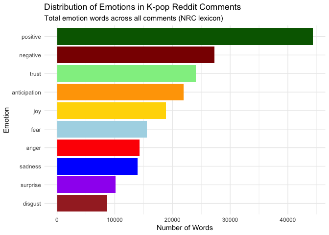
Which emotions dominate K-pop discussions?
Looking at the visualization, the emotional hierarchy is clear:
Top 5 Emotions (Most prevalent):
Positive (~40,000 words): Dominates by a huge margin
Negative (~25,000 words): Present but much lower than positive
Trust (~22,000 words): High—fans trust artists, community, sources
Anticipation (~20,000 words): Excitement about releases, comebacks, events
Joy (~18,000 words): Celebration and happiness
Middle Tier:
Fear (~14,000 words): Concerns about groups, controversies, industry
Anger (~13,000 words): Frustration with companies, scandals, decisions
Sadness (~13,000 words): Disappointment, nostalgia, farewells
Least Common:
Surprise (~9,000 words): Relatively rare—K-pop is a planned industry
Disgust (~8,000 words): Lowest—extreme negativity is uncommon
Key Insights:
Positive emotions dominate: Positive + Trust + Anticipation + Joy = ~100,000 words
Negative emotions are secondary: Negative + Fear + Anger + Sadness + Disgust = ~73,000 words
Ratio: ~1.4:1 positive-to-negative, confirming K-pop Reddit is an optimistic space
Trust and Anticipation are high: This reflects K-pop fan culture—loyalty to artists and excitement for content
Disgust is lowest: The community rarely expresses extreme repulsion
What does this mean?
K-pop Reddit is a positively-oriented, forward-looking community where fans express trust in their favorite groups and excitement for upcoming releases. While negative emotions exist (especially around controversies), they’re substantially outweighed by positive sentiment.
Coverage: How many comments have NRC emotions?
# Calculate NRC coverage
nrc_coverage <- nrow(nrc_by_comment)
print(nrc_coverage)## [1] 19179nrc_coverage_pct <- round(nrc_coverage / nrow(meta_theta_df) * 100, 1)
print(nrc_coverage_pct)## [1] 85.9NRC has the best coverage!
NRC scored 85.9% of comments—2,672 more than AFINN and 2,937 more than Bing
With ~14,000 words, NRC’s large vocabulary captures more K-pop discussions
Only 14.1% of comments (3,137) have no NRC emotion words
Example: Most emotional comments
# Calculate total emotion words per comment (excluding positive/negative to avoid double-counting)
nrc_intensity <- nrc_by_comment |>
mutate(
total_emotions = anger + anticipation + disgust + fear + joy + sadness + surprise + trust
) |>
select(comment_index, total_emotions, positive, negative, everything())
# Join with original text
nrc_with_text <- nrc_intensity |>
inner_join(meta_theta_df |> select(comment_index, text, score),
by = "comment_index")
# Most emotionally intense comments
nrc_with_text |>
arrange(desc(total_emotions)) |>
select(total_emotions, joy, anger, sadness, text) |>
head(3) |>
print()## # A tibble: 3 × 5
## total_emotions joy anger sadness text
## <int> <int> <int> <int> <chr>
## 1 257 16 51 36 "**[ⓓFocus] \"Min Hee-jin is the USIM\"...…
## 2 211 32 19 21 "Sorry i meant to get back to you much soo…
## 3 203 11 32 28 "Sorry for the long wait. Have trouble cro…# Most joyful comments
nrc_with_text |>
arrange(desc(joy)) |>
select(joy, positive, text) |>
head(3) |>
print()## # A tibble: 3 × 3
## joy positive text
## <int> <int> <chr>
## 1 38 81 "**four**: fire instrumental for an intro song, gets you hyped…
## 2 32 56 "3 tracks in WHAT IS OPTIONS?? Sorry for overlooking you queen…
## 3 32 66 "Sorry i meant to get back to you much sooner but i unexpected…# Most angry comments
nrc_with_text |>
arrange(desc(anger)) |>
select(anger, negative, text) |>
head(3) |>
print()## # A tibble: 3 × 3
## anger negative text
## <int> <int> <chr>
## 1 51 70 "**[ⓓFocus] \"Min Hee-jin is the USIM\"... NewJeans and the Me…
## 2 36 57 "This is the summary of the hearing today by Daily Sports. It'…
## 3 32 52 "Sorry for the long wait. Have trouble cross-checking these. B…2.5 Comparing All Three Dictionaries
Now that we’ve applied AFINN, Bing, and NRC to our K-pop comments, let’s compare them systematically to determine which dictionary is best for analyzing this data.
2.5.1 Coverage Comparison
Which dictionary scores the most comments?
# Create comparison table
coverage_comparison <- data.frame(
Dictionary = c("AFINN", "Bing", "NRC"),
Comments_Scored = c(afinn_coverage, bing_coverage, nrc_coverage),
Total_Comments = c(nrow(meta_theta_df), nrow(meta_theta_df), nrow(meta_theta_df)),
Coverage_Pct = c(coverage_pct, bing_coverage_pct, nrc_coverage_pct),
Vocabulary_Size = c("~2,477 words", "~6,786 words", "~14,000 words")
)
print(coverage_comparison)## Dictionary Comments_Scored Total_Comments Coverage_Pct Vocabulary_Size
## 1 AFINN 16507 22316 74.0 ~2,477 words
## 2 Bing 16242 22316 72.8 ~6,786 words
## 3 NRC 19179 22316 85.9 ~14,000 words# Visualize coverage
ggplot(coverage_comparison, aes(x = Dictionary, y = Coverage_Pct, fill = Dictionary)) +
geom_col() +
geom_text(aes(label = paste0(Coverage_Pct, "%")), vjust = -0.5, size = 5) +
ylim(0, 100) +
labs(
title = "Dictionary Coverage Comparison",
subtitle = "Percentage of K-pop comments with sentiment scores",
x = "Dictionary",
y = "Coverage (%)"
) +
theme_minimal() +
theme(legend.position = "none")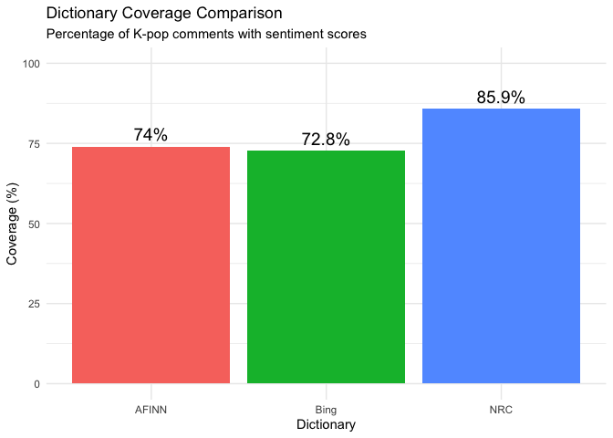
Winner: NRC (85.9%) has the best coverage, followed by AFINN (74%) and Bing (72.8%).
Surprise finding: Despite having 3x the vocabulary, Bing scored fewer comments than AFINN
NRC’s advantage: Large vocabulary (~14K words) captures more K-pop language
AFINN’s efficiency: Good coverage with smallest vocabulary
2.5.2 Sentiment Distribution Comparison
How do the dictionaries characterize K-pop sentiment?
# Create combined sentiment scores for comparison
# Need to join all three back to comment_index
sentiment_comparison <- meta_theta_df |>
select(comment_index) |>
left_join(afinn_sentiment |> select(comment_index, sentiment_afinn), by = "comment_index") |>
left_join(bing_sentiment |> select(comment_index, sentiment_bing), by = "comment_index") |>
left_join(nrc_by_comment |>
select(comment_index, positive, negative) |>
mutate(sentiment_nrc = positive - negative),
by = "comment_index")
# Summary statistics
summary(sentiment_comparison$sentiment_afinn)## Min. 1st Qu. Median Mean 3rd Qu. Max. NA's
## -80.000 -2.000 1.000 1.028 3.000 126.000 5809summary(sentiment_comparison$sentiment_bing)## Min. 1st Qu. Median Mean 3rd Qu. Max. NA's
## -41.0000 -1.0000 0.0000 -0.0753 1.0000 56.0000 6074summary(sentiment_comparison$sentiment_nrc)## Min. 1st Qu. Median Mean 3rd Qu. Max. NA's
## -21.0000 -1.0000 1.0000 0.8893 2.0000 68.0000 3137Key Differences:
| Dictionary | Median | Mean | Interpretation |
|---|---|---|---|
| AFINN | +1.0 | +1.028 | Slightly positive |
| Bing | 0.0 | -0.075 | Neutral/very slightly negative |
| NRC | +1.0 | +0.889 | Slightly positive (agrees with AFINN!) |
Important Findings:
AFINN and NRC agree (both medians = +1.0, means ~+1.0): K-pop Reddit is slightly positive
Bing disagrees (median = 0.0, mean = -0.075): Suggests neutral/slightly negative
Why? Bing doesn’t capture intensity, so “love” = “like” = +1 word
Range differences: AFINN has widest range (-80 to +126) because it’s based on weighted scores, not counts
Compare distributions side-by-side:
# Reshape for faceted plot
sentiment_long <- sentiment_comparison |>
select(comment_index, sentiment_afinn, sentiment_bing, sentiment_nrc) |>
pivot_longer(
cols = starts_with("sentiment_"),
names_to = "dictionary",
values_to = "sentiment",
names_prefix = "sentiment_"
) |>
filter(!is.na(sentiment)) |>
mutate(dictionary = toupper(dictionary))
# Faceted histogram
ggplot(sentiment_long, aes(x = sentiment, fill = dictionary)) +
geom_histogram(bins = 50, alpha = 0.7) +
geom_vline(xintercept = 0, linetype = "dashed", color = "red") +
facet_wrap(~ dictionary, scales = "free", ncol = 1) +
labs(
title = "Sentiment Distribution Comparison",
subtitle = "How each dictionary scores K-pop Reddit comments",
x = "Sentiment Score",
y = "Number of Comments"
) +
theme_minimal() +
theme(legend.position = "none")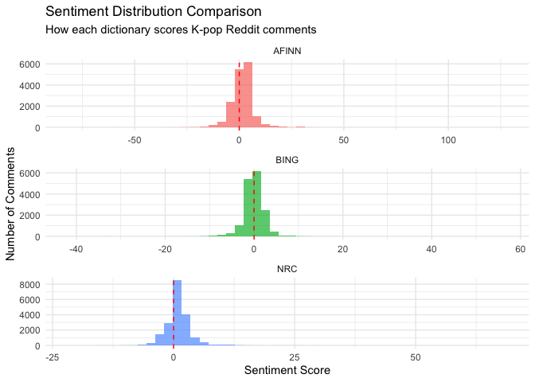
What the distributions show:
Comparing the three panels:
AFINN (top panel):
Right-skewed distribution centered just above 0
Captures positive lean with intensity weighting
Widest range due to -5 to +5 scoring system
Bing (middle panel):
Nearly symmetric, centered exactly at 0
Narrower range (only counts, not weights)
Suggests neutrality (missing the intensity of K-pop language)
NRC (bottom panel):
Right-skewed like AFINN
Centered slightly above 0
Agrees with AFINN that K-pop Reddit is positive
Narrower range than AFINN but more balanced than Bing
Key Insight: AFINN and NRC agree on the positive lean; Bing’s binary counting misses this signal.
2.5.3 Correlation Between Dictionaries
Do the dictionaries agree on which comments are positive/negative?
Reminder: Interpreting Correlations:
High correlation (>0.7): Dictionaries generally agree
Moderate correlation (0.4-0.7): Some agreement but differences exist
Low correlation (<0.4): Dictionaries measure different things
# Calculate correlations (only for comments scored by all three)
complete_cases <- sentiment_comparison |>
filter(!is.na(sentiment_afinn) & !is.na(sentiment_bing) & !is.na(sentiment_nrc))
# Scatter plot: AFINN vs. Bing
ggplot(complete_cases, aes(x = sentiment_afinn, y = sentiment_bing)) +
geom_point(alpha = 0.1) +
geom_smooth(method = "lm", color = "red") +
geom_hline(yintercept = 0, linetype = "dashed") +
geom_vline(xintercept = 0, linetype = "dashed") +
labs(
title = "AFINN vs. Bing: Do They Agree?",
subtitle = paste0("Correlation: ", round(cor(complete_cases$sentiment_afinn, complete_cases$sentiment_bing), 3)),
x = "AFINN Sentiment",
y = "Bing Sentiment"
) +
theme_minimal()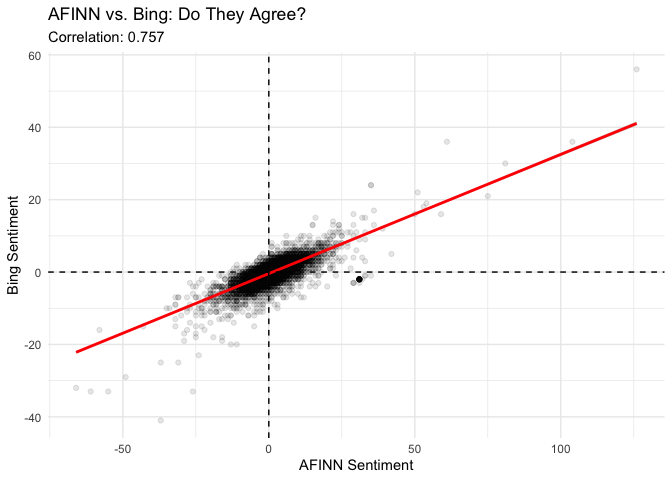
Interpreting the Correlations:
AFINN vs. Bing: 0.757 (High correlation)
The dictionaries generally agree on positive vs. negative
Strong positive relationship visible in scatter plot
Despite different scoring methods, they capture similar sentiment signals
AFINN vs. NRC: 0.645 (Moderate-high correlation)
Good agreement but some divergence
NRC’s multi-emotion approach captures different dimensions
Bing vs. NRC: 0.592 (Moderate correlation)
Lowest correlation of the three pairs
Both use binary/count methods but differ in vocabulary
What the scatter plot shows:
Strong linear relationship (correlation = 0.757)
Most points cluster near zero (neutral comments)
Clear positive slope: when AFINN is positive, Bing tends to be positive too
Some scatter: comments can have different scores depending on intensity vs. counts
Outliers exist: some comments very positive on AFINN but moderate on Bing (intensity effect)
Key Finding: 62% of comments (13,956 out of 22,316) were scored by all three dictionaries, and they show strong-to-moderate agreement on sentiment direction.
2.5.4 Which Dictionary Should We Use?
Decision criteria for K-pop Reddit analysis:
# Create decision matrix
decision_matrix <- data.frame(
Criterion = c("Coverage", "Intensity", "Interpretability", "Regression-ready", "Emotion detail"),
AFINN = c("74%", "YES", "Simple", "YES", "NO"),
Bing = c("72.8%", "NO", "Simple", "NO", "NO"),
NRC = c("85.9%", "NO", "Complex", "NO", "YES")
)
print(decision_matrix)## Criterion AFINN Bing NRC
## 1 Coverage 74% 72.8% 85.9%
## 2 Intensity YES NO NO
## 3 Interpretability Simple Simple Complex
## 4 Regression-ready YES NO NO
## 5 Emotion detail NO NO YESOur Recommendation: AFINN
Why AFINN is best for this analysis:
*Captures intensity**: K-pop fans use strong positive language (“love”, “amazing”, “perfect”)—AFINN’s -5 to +5 scale captures this better than binary dictionaries
Good coverage: 74% is sufficient (only 11% less than NRC)
High correlation with others: r=0.76 with Bing, r=0.65 with NRC—validates findings
Regression-ready: Numeric scores work in statistical models (Section 5)
Simple interpretation: One number = easy to understand and visualize
Matches intuition: Median +1, mean +1.028 aligns with K-pop Reddit being a positive space
NRC validation: NRC (median +1, mean +0.89) confirms AFINN’s positive finding
When to use others:
Bing: If you only need positive/negative classification for machine learning
NRC: If you need detailed emotional profiling (joy, anger, fear) or want maximum coverage (85.9%)
Going forward: We’ll use AFINN sentiment scores to analyze sentiment by topic (Section 2.6) and predict engagement (Section 5).
rm(list=setdiff(ls(), c("data3", "meta_theta_df", "lda_model_k5", "afinn_sentiment")))3 Sentiment by Topic Analysis
Now that we’ve selected AFINN as our sentiment measure, let’s explore: Do different topics have different sentiment?
Recall our 5 topics from Lecture 9:
Topic 1: Music and appreciation
Topic 2: Fan discussions and community
Topic 3: Rules and moderation
Topic 4: Groups and industry
Topic 5: HYBE controversy
Research Question: Are some topics more positive or negative than others?
3.1 Create Sentiment-Topic Dataset
First, we need to combine AFINN sentiment scores with topic probabilities:
# Join AFINN sentiment with meta_theta_df (which has topic gammas)
meta_theta_df <- meta_theta_df |>
left_join(afinn_sentiment |> select(comment_index, sentiment_afinn, avg_sentiment),
by = "comment_index")
# Check how many comments have both sentiment and topic data
n_with_both <- sum(!is.na(meta_theta_df$sentiment_afinn))
print(round(n_with_both / nrow(meta_theta_df) * 100, 1))## [1] 74# Preview the data
head(meta_theta_df |> select(comment_index, sentiment_afinn, topic_1:topic_5), 10)## # A tibble: 10 × 7
## comment_index sentiment_afinn topic_1 topic_2 topic_3 topic_4 topic_5
## <dbl> <dbl> <dbl> <dbl> <dbl> <dbl> <dbl>
## 1 1 1 0.142 0.245 0.170 0.245 0.198
## 2 2 1 0.141 0.141 0.437 0.141 0.141
## 3 3 2 0.159 0.159 0.391 0.145 0.145
## 4 4 NA 0.218 0.218 0.2 0.182 0.182
## 5 5 NA 0.135 0.135 0.405 0.176 0.149
## 6 6 2 0.259 0.185 0.185 0.185 0.185
## 7 7 NA 0.212 0.192 0.212 0.192 0.192
## 8 8 1 0.207 0.190 0.172 0.241 0.190
## 9 9 2 0.115 0.0846 0.485 0.185 0.131
## 10 10 NA 0.192 0.192 0.212 0.192 0.212Note: Comments without AFINN scores (NA) will be excluded from this analysis. We expect 16,507 comments (74% coverage from Section 2.2).
3.1 Create Weighted Sentiment-Topic Scores
For each comment, we’ll multiply its sentiment by each topic’s probability (gamma):
# Create weighted sentiment scores: sentiment × topic probability
meta_theta_df <- meta_theta_df |>
filter(!is.na(sentiment_afinn)) |>
mutate(
sentiment_topic_1 = sentiment_afinn * topic_1,
sentiment_topic_2 = sentiment_afinn * topic_2,
sentiment_topic_3 = sentiment_afinn * topic_3,
sentiment_topic_4 = sentiment_afinn * topic_4,
sentiment_topic_5 = sentiment_afinn * topic_5
)
# Preview
head(meta_theta_df |> select(comment_index, sentiment_afinn, topic_1:topic_5,
sentiment_topic_1:sentiment_topic_5), 10)## # A tibble: 10 × 12
## comment_index sentiment_afinn topic_1 topic_2 topic_3 topic_4 topic_5
## <dbl> <dbl> <dbl> <dbl> <dbl> <dbl> <dbl>
## 1 1 1 0.142 0.245 0.170 0.245 0.198
## 2 2 1 0.141 0.141 0.437 0.141 0.141
## 3 3 2 0.159 0.159 0.391 0.145 0.145
## 4 6 2 0.259 0.185 0.185 0.185 0.185
## 5 8 1 0.207 0.190 0.172 0.241 0.190
## 6 9 2 0.115 0.0846 0.485 0.185 0.131
## 7 11 -1 0.204 0.185 0.204 0.204 0.204
## 8 12 -2 0.190 0.222 0.190 0.206 0.190
## 9 15 -2 0.218 0.218 0.182 0.182 0.2
## 10 16 2 0.204 0.204 0.185 0.222 0.185
## # ℹ 5 more variables: sentiment_topic_1 <dbl>, sentiment_topic_2 <dbl>,
## # sentiment_topic_3 <dbl>, sentiment_topic_4 <dbl>, sentiment_topic_5 <dbl>What we’re doing:
sentiment_topic_1 = sentiment_afinn × topic_1: If a comment is 80% Topic 1 (gamma=0.8) with sentiment +5, it contributes 4 points to Topic 1’s sentiment
sentiment_topic_2 = sentiment_afinn × topic_2: Same comment might be 20% Topic 2 (gamma=0.2), contributing 1 point to Topic 2’s sentiment
This weighted approach uses the full topic distribution.
3.2 Aggregate Sentiment by Topic
Now we aggregate weighted sentiment across all comments to get average sentiment per topic:
Total_Gamma_Mass: Sum of all gamma probabilities for this topic across all comments (how “present” the topic is overall)
Total_Weighted_Sentiment: Sum of sentiment × gamma for this topic
Avg_Sentiment: Average sentiment associated with this topic (Total_Weighted_Sentiment / Total_Gamma_Mass)
This gives us the average sentiment when this topic is discussed.
# Sum weighted sentiment across all comments for each topic
topic_sentiment_totals <- meta_theta_df |>
summarise(
total_sentiment_topic_1 = sum(sentiment_topic_1),
total_sentiment_topic_2 = sum(sentiment_topic_2),
total_sentiment_topic_3 = sum(sentiment_topic_3),
total_sentiment_topic_4 = sum(sentiment_topic_4),
total_sentiment_topic_5 = sum(sentiment_topic_5),
total_gamma_topic_1 = sum(topic_1),
total_gamma_topic_2 = sum(topic_2),
total_gamma_topic_3 = sum(topic_3),
total_gamma_topic_4 = sum(topic_4),
total_gamma_topic_5 = sum(topic_5)
)
# Calculate average sentiment per topic (weighted by gamma mass)
topic_sentiment_avg <- data.frame(
Topic = c("Topic 1: Music", "Topic 2: Fans", "Topic 3: Rules",
"Topic 4: Groups", "Topic 5: HYBE"),
Total_Weighted_Sentiment = c(
topic_sentiment_totals$total_sentiment_topic_1,
topic_sentiment_totals$total_sentiment_topic_2,
topic_sentiment_totals$total_sentiment_topic_3,
topic_sentiment_totals$total_sentiment_topic_4,
topic_sentiment_totals$total_sentiment_topic_5
),
Total_Gamma_Mass = c(
topic_sentiment_totals$total_gamma_topic_1,
topic_sentiment_totals$total_gamma_topic_2,
topic_sentiment_totals$total_gamma_topic_3,
topic_sentiment_totals$total_gamma_topic_4,
topic_sentiment_totals$total_gamma_topic_5
)
) |>
mutate(
Avg_Sentiment = Total_Weighted_Sentiment / Total_Gamma_Mass
) |>
arrange(desc(Avg_Sentiment))
print(topic_sentiment_avg)## Topic Total_Weighted_Sentiment Total_Gamma_Mass Avg_Sentiment
## 1 Topic 1: Music 5327.629 3361.853 1.5847299
## 2 Topic 3: Rules 4248.819 3151.324 1.3482647
## 3 Topic 4: Groups 3749.823 3292.370 1.1389431
## 4 Topic 2: Fans 2338.760 3361.931 0.6956597
## 5 Topic 5: HYBE 1300.969 3339.521 0.3895676Key Findings:
Topic 1 (Music): Highest sentiment (1.58)
Music appreciation drives the most positive discussions
Comments about performances, songs, and choreography are enthusiastic
Topic 3 (Rules): Second highest (1.35)
Surprisingly positive! Moderation posts tend to be polite/constructive
Template-like language may include positive framing
Topic 4 (Groups): Moderate positive (1.14)
- General group discussions are positive but less enthusiastic than music
Topic 2 (Fans): Mildly positive (0.70)
Fan community discussions are positive but more neutral
May include debates, disagreements alongside support
Topic 5 (HYBE): Lowest sentiment (0.39)
Controversy-focused discussions are least positive
Still slightly positive overall (not negative!)—fans express frustration but not extreme negativity
Important Note: Even the “most negative” topic (HYBE) has positive average sentiment (0.39). This confirms K-pop Reddit is generally a positive space, but sentiment varies by topic.
Gamma Mass Distribution: All topics have similar Total_Gamma_Mass (~3,150-3,360), meaning topics are roughly equally prevalent in the dataset. No single topic dominates.
3.3 Visualize Topic Sentiment
Bar chart: Average sentiment by topic
# Bar chart of average sentiment
ggplot(topic_sentiment_avg, aes(x = reorder(Topic, Avg_Sentiment),
y = Avg_Sentiment,
fill = Topic)) +
geom_col(alpha = 0.8) +
geom_hline(yintercept = 0, linetype = "dashed", color = "red", size = 1) +
geom_hline(yintercept = 1.028, linetype = "dotted", color = "blue", size = 1) +
scale_fill_manual(values = wesanderson::wes_palette("Darjeeling1", n = 5, type = "discrete")) +
coord_flip() +
labs(
title = "Average Sentiment by Topic",
subtitle = "Weighted by topic probability (gamma). Blue line = overall mean (1.028)",
x = "Topic",
y = "Average AFINN Sentiment"
) +
theme_minimal() +
theme(legend.position = "none")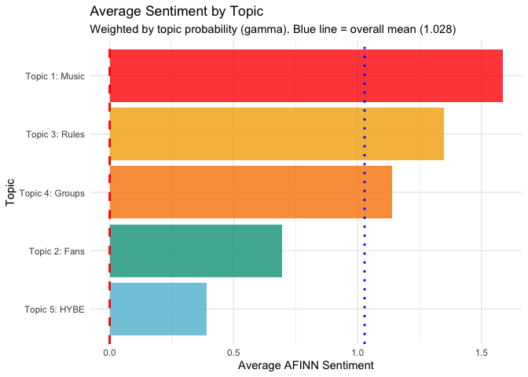
NB: What the blue dotted line shows - Overall mean sentiment from Section 2.2 (1.028). Topics above this line are more positive than average; topics below are less positive.
What the bar chart shows:
Looking at the visualization:
Clear hierarchy exists: Topic sentiment ranges from 0.39 (HYBE) to 1.58 (Music)—a 1.2 point spread
Three topics exceed overall mean (blue dotted line at 1.028):
Topic 1 (Music): Far exceeds average—music appreciation is exceptionally positive
Topic 3 (Rules): Moderately above average—moderation language is constructive
Topic 4 (Groups): Just above average—group discussions are positive
Two topics below overall mean:
Topic 2 (Fans): Notably below average—fan discussions are more neutral/mixed
Topic 5 (HYBE): Well below average—controversy discussions are least positive
All topics are positive (above red line at 0):
Even HYBE controversy (0.39) is positive on average
No topic is predominantly negative
Confirms K-pop Reddit’s overall positive tone
Key Insight: Music appreciation (Topic 1) is 4× more positive than HYBE controversy (Topic 5), showing that what K-pop fans discuss matters for sentiment—content about music is celebratory while corporate controversies generate frustration.
Alternative visualization: Boxplots for prominent topics
To see the full distribution, let’s look at comments where each topic is prominent (gamma > 0.3):
Why filter at gamma > 0.3?
LDA assigns probabilities to all topics, but many are very small
Gamma > 0.3 means “this topic accounts for at least 30% of the comment’s content”
This gives us comments that are genuinely about each topic
Allows us to see sentiment distributions, not just averages
# Reshape to long format for boxplots
sentiment_topic_long <- meta_theta_df |>
select(comment_index, sentiment_afinn, topic_1:topic_5) |>
pivot_longer(
cols = topic_1:topic_5,
names_to = "topic",
values_to = "gamma",
names_prefix = "topic_"
) |>
mutate(
topic = case_when(
topic == "1" ~ "Topic 1: Music",
topic == "2" ~ "Topic 2: Fans",
topic == "3" ~ "Topic 3: Rules",
topic == "4" ~ "Topic 4: Groups",
topic == "5" ~ "Topic 5: HYBE"
)
) |>
filter(gamma > 0.3) # Only include comments where topic is prominent (>30%)
# Count comments per topic (with gamma > 0.3)
table(sentiment_topic_long$topic)##
## Topic 1: Music Topic 2: Fans Topic 3: Rules Topic 4: Groups Topic 5: HYBE
## 591 271 506 392 1086# Boxplot of sentiment for comments where each topic is prominent
ggplot(sentiment_topic_long, aes(x = reorder(topic, sentiment_afinn, FUN = median),
y = sentiment_afinn,
fill = topic)) +
geom_boxplot(alpha = 0.7, outlier.alpha = 0.2) +
geom_hline(yintercept = 0, linetype = "dashed", color = "red") +
geom_hline(yintercept = 1.028, linetype = "dotted", color = "blue") +
coord_flip() +
labs(
title = "Sentiment for Comments Where Each Topic is Prominent",
subtitle = "Only comments where topic probability > 30%. Blue line = overall mean",
x = "Topic",
y = "AFINN Sentiment Score"
) +
theme_minimal() +
theme(legend.position = "none")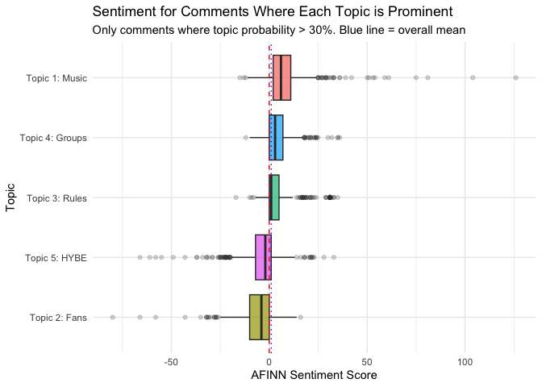
Remember boxplots:
Box center line: Median sentiment for comments strongly about this topic
Box height: Middle 50% of sentiment scores
Whiskers & dots: Full range and outliers
Compare to blue line (overall mean) to see which topics exceed average sentiment
Key patterns:
Topic 1 (Music): Median above 0, narrow spread, positive outliers → consistently positive
Topic 4 (Groups): Similar to Music, median ~1
Topic 3 (Rules): Box straddles zero → neutral/factual
Topic 5 (HYBE): Wide outlier spread → polarizing topic (extreme views on both sides)
Topic 2 (Fans): Median slightly negative → most mixed/neutral discussions
Why boxplot order differs from Section 3.2: Weighted averages account for mixed comments; boxplot shows only comments primarily about each topic (gamma > 0.3).
3.4 Statistical Significance
Can we test if topics differ significantly in sentiment?
Intercept: Average sentiment for reference topic (Topic 1: Music)
Coefficients: Difference in sentiment compared to Music
Negative = less positive than Music
Positive = more positive than Music
p-values: Statistical significance of differences
- p < 0.05 = significantly different from Music
Weights = gamma: Comments with higher topic probability have more influence
We’ll use weighted regression where each comment-topic pair is weighted by its gamma probability:
# Reshape for regression: create one row per comment-topic pair
sentiment_topic_pairs <- meta_theta_df |>
select(comment_index, sentiment_afinn, topic_1:topic_5) |>
pivot_longer(
cols = topic_1:topic_5,
names_to = "topic",
values_to = "gamma",
names_prefix = "topic_"
) |>
mutate(
topic = factor(topic, levels = c("1", "2", "3", "4", "5"),
labels = c("Music", "Fans", "Rules", "Groups", "HYBE"))
)
# Weighted regression: sentiment ~ topic, weighted by gamma
weighted_model <- lm(sentiment_afinn ~ topic,
data = sentiment_topic_pairs,
weights = gamma)
summary(weighted_model)##
## Call:
## lm(formula = sentiment_afinn ~ topic, data = sentiment_topic_pairs,
## weights = gamma)
##
## Weighted Residuals:
## Min 1Q Median 3Q Max
## -52.089 -1.338 0.138 1.113 109.048
##
## Coefficients:
## Estimate Std. Error t value Pr(>|t|)
## (Intercept) 1.58473 0.04526 35.015 < 2e-16 ***
## topicFans -0.88907 0.06400 -13.891 < 2e-16 ***
## topicRules -0.23647 0.06506 -3.634 0.000279 ***
## topicGroups -0.44579 0.06434 -6.928 4.29e-12 ***
## topicHYBE -1.19516 0.06411 -18.642 < 2e-16 ***
## ---
## Signif. codes: 0 '***' 0.001 '**' 0.01 '*' 0.05 '.' 0.1 ' ' 1
##
## Residual standard error: 2.624 on 82530 degrees of freedom
## Multiple R-squared: 0.005492, Adjusted R-squared: 0.005444
## F-statistic: 113.9 on 4 and 82530 DF, p-value: < 2.2e-16Key Findings:
Intercept (1.585): Average sentiment for Music topic
All topics significantly differ from Music (all p < 0.001)
Largest difference: HYBE (-1.20 points) vs. Music
Smallest difference: Rules (-0.24 points) vs. Music
Overall model: Highly significant (p < 2.2e-16), but R² = 0.005 (topic explains only 0.5% of sentiment variance—most variation is within topics, not between them)
Coefficient plot: Visualize differences from Music
# Extract coefficients and confidence intervals
library(broom)
coef_data <- tidy(weighted_model, conf.int = TRUE) |>
filter(term != "(Intercept)") |>
mutate(
topic = gsub("topic", "", term),
topic = factor(topic, levels = c("HYBE", "Fans", "Groups", "Rules"))
)
# Coefficient plot
ggplot(coef_data, aes(x = estimate, y = topic, color = topic)) +
geom_vline(xintercept = 0, linetype = "dashed", color = "gray50") +
geom_point(size = 4) +
geom_errorbarh(aes(xmin = conf.low, xmax = conf.high), height = 0.2, size = 1) +
scale_color_manual(values = wesanderson::wes_palette("Darjeeling1", n = 4, type = "discrete")) +
labs(
title = "Sentiment Difference from Music Topic",
subtitle = "Weighted regression coefficients with 95% confidence intervals",
x = "Difference in AFINN Sentiment (compared to Music)",
y = "Topic"
) +
theme_minimal() +
theme(legend.position = "none")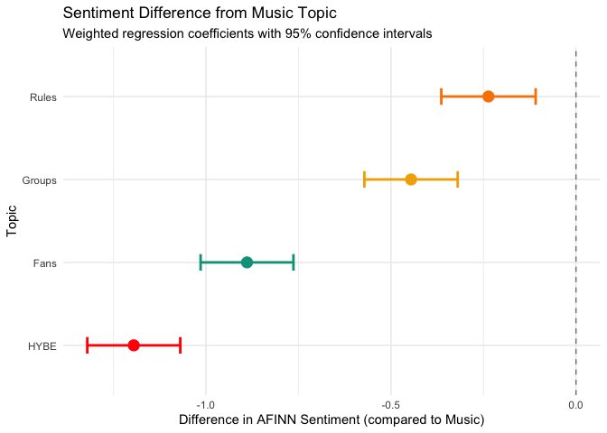
HYBE: -1.20 points less positive than Music (largest difference)
Fans: -0.89 points less positive than Music
Groups: -0.45 points less positive than Music
Rules: -0.24 points less positive than Music (smallest difference)
All error bars left of zero: All differences statistically significant
No overlap with zero line: Strong evidence topics differ from Music
3.5 Class Exercise: Changing the Reference Category
Current analysis: We used Music (Topic 1) as the reference category. All other topics are compared to Music.
Question: What if we used Rules (Topic 3) as the reference instead? Would this make sense? What would change?
Your task:
Recode the topic variable to make Rules the reference category
Re-run the weighted regression
Create a new coefficient plot
Interpret the results
Starter code:
# Step 1: Recode topic with Rules as reference
sentiment_topic_pairs_rules <- sentiment_topic_pairs |>
mutate(
topic = factor(topic, levels = c("Rules", "Music", "Fans", "Groups", "HYBE"))
)
# Step 2: Re-run weighted regression
weighted_model_rules <- lm()
summary(weighted_model_rules)
# Step 3: Extract coefficients and create plot
coef_data_rules <-
# Coefficient plot
ggplot(coef_data_rules, aes(x = estimate, y = topic, color = topic)) +
geom_vline(xintercept = 0, linetype = "dashed", color = "gray50") +
geom_point(size = 4) +
geom_errorbarh(aes(xmin = conf.low, xmax = conf.high), height = 0.2, size = 1) +
scale_color_manual(values = wesanderson::wes_palette("Darjeeling1", n = 4, type = "discrete")) +
labs(
title = "Sentiment Difference from Rules Topic",
subtitle = "Weighted regression coefficients with 95% confidence intervals",
x = "Difference in AFINN Sentiment (compared to Rules)",
y = "Topic"
) +
theme_minimal() +
theme(legend.position = "none")Questions to answer:
What is the new intercept? What does it represent?
How do the coefficients change?
Compare Music’s coefficient in the new model to the old model
Hint: Think about the relationship between Rules and Music
Does using Rules as reference make sense?
Why or why not?
When might you want Rules as the reference?
When is Music a better reference?
Do the conclusions change?
Are the same topics significantly different?
Does the story about topic sentiment change?
Think about: The choice of reference category affects interpretation but not the underlying relationships. Choose a reference that makes your research question easiest to answer!
3.6 Sentiment Over Time
Now that we understand sentiment varies by topic, let’s explore how sentiment changes over time. Do K-pop Reddit discussions become more or less positive over time? Are certain time periods associated with specific topics or sentiment patterns?
Research questions:
Does overall sentiment change over time?
Do different topics have different temporal patterns?
Are there specific time periods with sentiment spikes or drops?
3.6.1 Prepare temporal data
First, let’s check our date variable and prepare the data for time series analysis.
# Check date range
range(meta_theta_df$date)## [1] "2025-07-01" "2025-07-31"# Summary of dates
summary(meta_theta_df$date)## Min. 1st Qu. Median Mean 3rd Qu. Max.
## "2025-07-01" "2025-07-09" "2025-07-15" "2025-07-15" "2025-07-24" "2025-07-31"3.6.2 Overall sentiment trend
Let’s start by visualizing how overall sentiment changes over time.
Note: For more details on formatting date axes in ggplot2, see Lecture 3: Date Scales.
# Aggregate sentiment by month
sentiment_time <- meta_theta_df |>
group_by(date) |>
summarise(
mean_sentiment = mean(sentiment_afinn, na.rm = TRUE),
median_sentiment = median(sentiment_afinn, na.rm = TRUE),
n_comments = n(),
.groups = "drop"
)
ggplot(sentiment_time, aes(x = date, y = mean_sentiment)) +
geom_line(color = NatParksPalettes::natparks.pals("Yellowstone", n = 5)[1], size = 1) +
geom_point(color = NatParksPalettes::natparks.pals("Yellowstone", n = 5)[1], size = 2) +
geom_hline(yintercept = 1.028, linetype = "dashed", color = "gray50") +
geom_hline(yintercept = 0, linetype = "dotted", color = "red") +
geom_smooth(method = "loess", se = TRUE,
color = NatParksPalettes::natparks.pals("Yellowstone", n = 5)[2],
fill = NatParksPalettes::natparks.pals("Yellowstone", n = 5)[2],
alpha = 0.2) +
scale_x_date(
date_breaks = "1 days",
date_labels = "%d-%b-%y"
) +
scale_y_continuous(limits = c(-2, 3), breaks = seq(-2, 3, by = 0.5)) +
labs(
title = "K-pop Reddit Sentiment Over Time",
subtitle = "Monthly average AFINN sentiment with LOESS trend",
x = "Date",
y = "Mean AFINN Sentiment",
caption = paste0("Dashed line = overall mean (1.028). N = ", nrow(meta_theta_df), " comments")
) +
theme_minimal() +
theme(axis.text.x = element_text(angle = 90, hjust = 1))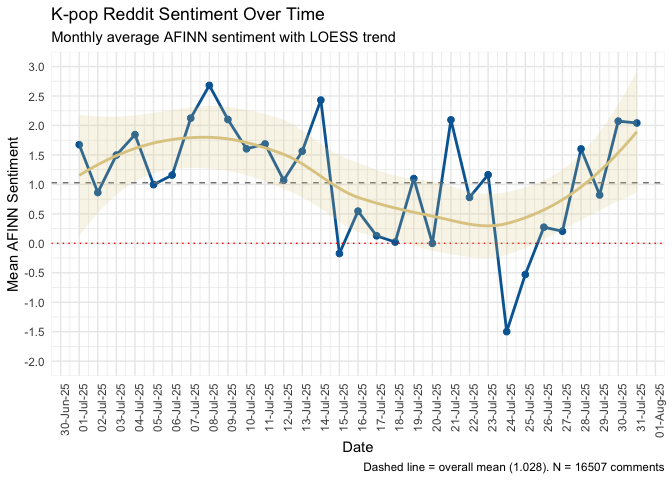
Interpretation guidance:
The dashed grey line shows the overall mean (1.028)
The dotted red line shows 0
The LOESS curve shows the general trend
Look for: Upward/downward trends, seasonal patterns, sudden changes
Class Questions:
Using the plot above and the sentiment_time data frame, answer the following:
When was the most positive month? What was the mean sentiment score?
- Hint: Use
which.max()orslice_max()
- Hint: Use
When was the most negative month? What was the mean sentiment score?
- Hint: Use
which.min()orslice_min()
- Hint: Use
Overall trend: Is K-pop Reddit sentiment increasing or decreasing over time?
Look at the LOESS curve (tan/yellow line)
What might explain any major drops or spikes?
Volatility: How much does sentiment vary month-to-month?
Calculate:
sd(sentiment_time$mean_sentiment)What does high volatility suggest about K-pop fan discussions?
Try this code:
# Your exploration here
# 1. Most positive month
sentiment_time |> slice_max(mean_sentiment, n = 1)
# 2. Most negative month
sentiment_time |> slice_min(mean_sentiment, n = 1)
# 3. Simple trend test
cor.test(as.numeric(sentiment_time$date), sentiment_time$mean_sentiment)
# 4. Volatility
sd(sentiment_time$mean_sentiment)3.6.3 Sentiment by topic over time
Now let’s see how sentiment for each topic changes over time using our weighted approach.
# Recreate sentiment_topic_pairs WITH the date column
sentiment_topic_pairs <- sentiment_topic_pairs |>
left_join(meta_theta_df |> select(comment_index, date), by = "comment_index")
sentiment_topic_time <- sentiment_topic_pairs |>
group_by(date, topic) |>
summarise(
weighted_sentiment = weighted.mean(sentiment_afinn, gamma, na.rm = TRUE),
total_gamma = sum(gamma, na.rm = TRUE),
n_comments = n(),
.groups = "drop"
)
# Plot sentiment by topic over time
ggplot(sentiment_topic_time, aes(x = date, y = weighted_sentiment, color = topic)) +
geom_line(size = 1) +
geom_point(size = 1.5) +
scale_x_date(
date_breaks = "1 days",
date_labels = "%d-%b-%y"
) +
scale_y_continuous(limits = c(-3, 3), breaks = seq(-3, 3, by = 0.5)) +
scale_color_manual(values = NatParksPalettes::natparks.pals("Yellowstone", n = 5, type = "continuous")) +
labs(
title = "Sentiment Trends by Topic",
subtitle = "Daily weighted average AFINN sentiment for each topic",
x = "Date",
y = "Weighted Mean AFINN Sentiment",
color = "Topic"
) +
theme_minimal() +
theme(legend.position = "right",
axis.text.x = element_text(angle = 90, hjust = 1))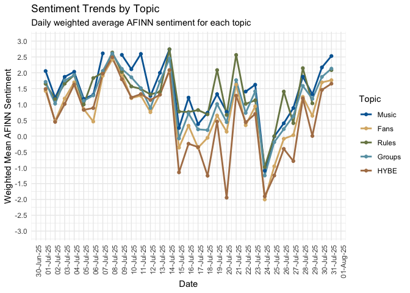
Let’s do a faceted version remember Lecture 3 7. Facets
ggplot(sentiment_topic_time, aes(x = date, y = weighted_sentiment, color = topic)) +
geom_line(size = 1) +
geom_point(size = 1.5) +
geom_smooth(method = "loess", se = TRUE, alpha = 0.2) +
scale_x_date(
date_breaks = "1 days",
date_labels = "%d-%b-%y"
) +
scale_y_continuous(limits = c(-3, 3), breaks = seq(-3, 3, by = 1)) + # Wider breaks for small panels
scale_color_manual(values = NatParksPalettes::natparks.pals("Yellowstone", n = 5, type = "continuous")) +
facet_wrap(~ topic, ncol = 1, scales = "fixed") + # Fixed y-scale to compare across topics
labs(
title = "Sentiment Trends by Topic",
subtitle = "Daily weighted average with LOESS trend line",
x = "Date",
y = "Weighted Mean AFINN Sentiment"
) +
theme_minimal() +
theme(
legend.position = "none", # No legend needed with facets
axis.text.x = element_text(angle = 90, hjust = 1, size = 8),
strip.text = element_text(face = "bold", size = 10)
)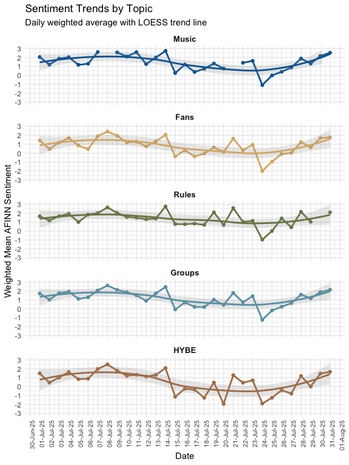
Questions to explore:
Which topic shows the most day-to-day variation?
Are there synchronized changes (all topics move together on certain days)?
Do certain topics show clearer trends than others within the month?
Lecture 10 Cheat Sheet
| Function/Concept | Description | Code Example |
|---|---|---|
get_sentiments("afinn") |
Load AFINN sentiment dictionary (-5 to +5) | tokens |> inner_join(get_sentiments("afinn")) |
get_sentiments("bing") |
Load Bing sentiment dictionary (positive/negative) | tokens |> inner_join(get_sentiments("bing")) |
get_sentiments("nrc") |
Load NRC emotion lexicon (8 emotions) | tokens |> inner_join(get_sentiments("nrc")) |
pivot_longer() |
Convert topic columns to long format | pivot_longer(topic_1:topic_5, names_to = "topic", values_to = "gamma") |
weighted.mean(x, w) |
Calculate weighted average | summarise(weighted_sent = weighted.mean(sentiment, gamma)) |
lm(y ~ x, weights = w) |
Weighted linear regression | lm(sentiment ~ topic, weights = gamma) |
tidy(model, conf.int = TRUE) |
Extract coefficients with confidence intervals | broom::tidy(model, conf.int = TRUE) |
factor(x, levels = c()) |
Set reference category | factor(topic, levels = c("Music", "Fans")) |
floor_date(date, "month") |
Aggregate dates to month | mutate(year_month = floor_date(date, "month")) |
scale_x_date() |
Format date axis | scale_x_date(date_breaks = "5 days", date_labels = "%d-%b") |
geom_smooth(method = "loess") |
Add smoothed trend line | geom_smooth(method = "loess", se = TRUE) |
geom_area() |
Create stacked area chart | geom_area(aes(x = date, y = prop, fill = topic)) |
geom_errorbarh() |
Horizontal error bars for coefficients | geom_errorbarh(aes(xmin = conf.low, xmax = conf.high)) |
natparks.pals() |
National Parks color palettes | scale_color_manual(values = natparks.pals("Yellowstone", n = 5)) |